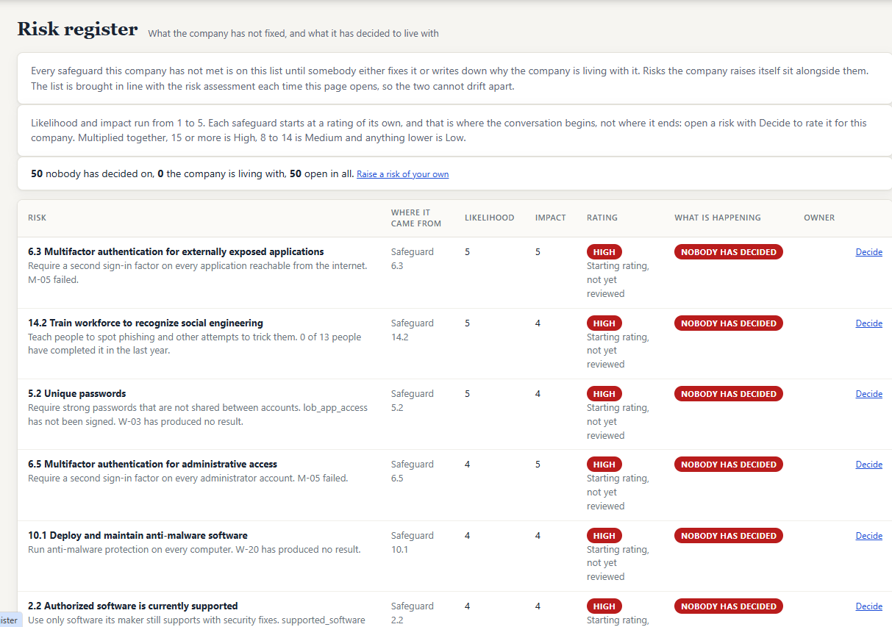

The CMMC third-party mandate is paused. Your self-assessment is still required.
Contractors and subcontractors must still implement NIST SP 800-171 and post annual self-assessments to SPRS. PCS builds and maintains the evidence for all 110 practices.

All 110 CMMC Level 2 practices, across all 14 domains, are tracked in PCS.
Each practice has a control record, a dated evidence status, and a path to fix what is still open. Skopein reads the technical settings, and training records cover the awareness and training domain.
A Pistos compliance professional can run your self-assessment from start to finish.
Your SPRS score stays current and is backed by evidence for each practice.
When the mandate returns
A subcontractor that keeps its evidence current will be ready when third-party assessments resume.
The frameworks PCS covers for defense
CMMC 2.0NIST SP 800-171NIST SP 800-172DFARS 252.204-7012